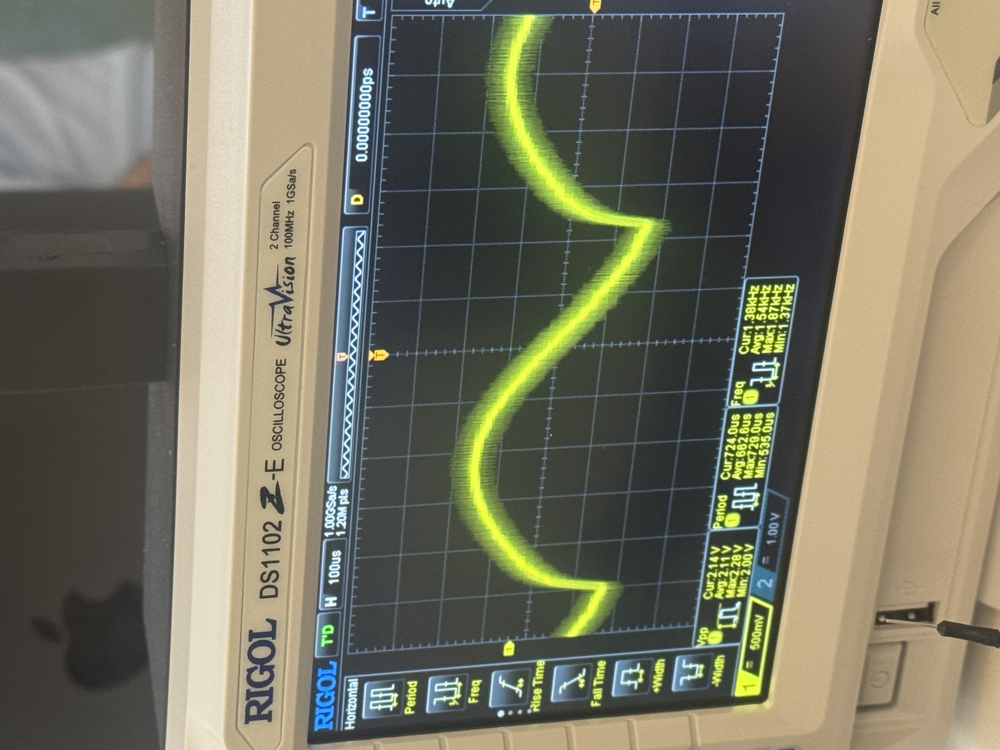
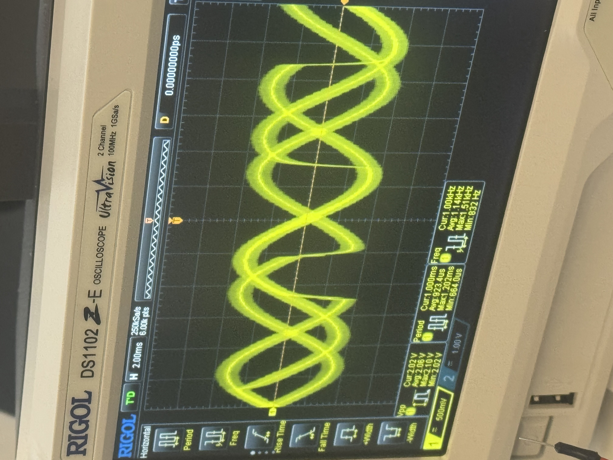
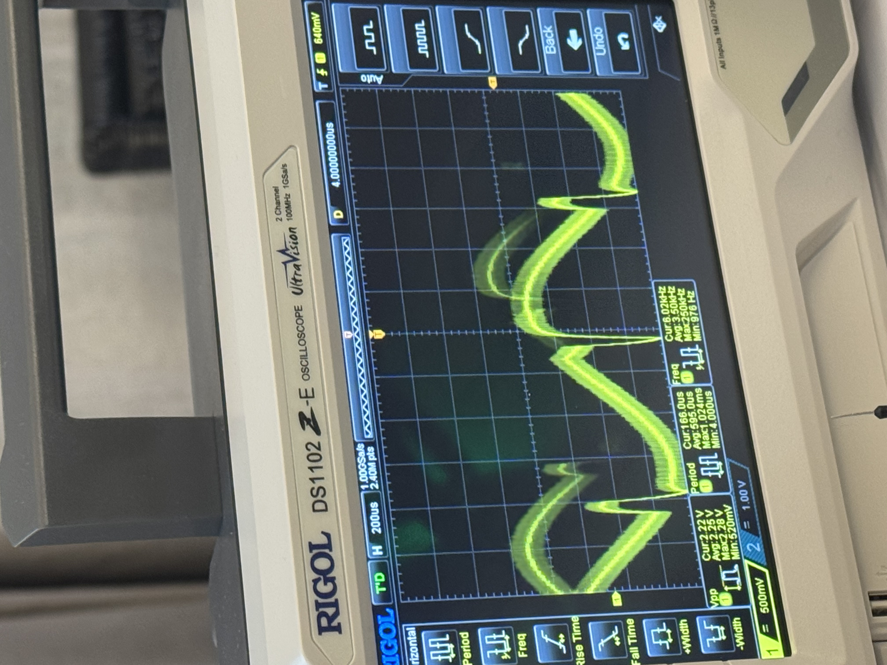

PiDMASound: Bare-Metal Audio on a Raspberry Pi
If no one had ever coded an OS before, how would you get music out of a Raspberry Pi? GPIO pins can only output 0 V or 3.3 V. So how do you turn a single digital pin into analog sound?
The core problem
Last winter I took CS140E at Stanford — building an operating system on a Raspberry Pi from scratch — with the wonderful Dawson Engler. For my final project I wanted to generate analog sound.
GPIO pins are 1-bit: at any instant either low (0 V) or high (3.3 V). Nothing in between. But the music we listen to every day is an analog, continuous, signal. Hence the core question: how do we play the Harry Potter soundtrack on a Raspberry Pi?
The whole system is one pipeline that carries a 16-bit audio sample from RAM all the way to a speaker, crossing from the digital into world after the low-pass filter.
What are the constraints of using bare metal?
Let's avoid talking about the Broadcom BCM2835 datasheet torture, which is, no doubt, a disadvantage in life on its own. Without an OS, the only way to make an analog voltage is to build a DAC (Digital-to-Analog Converter) yourself: generate a fast stream of 1s and 0s whose average is the voltage you want, and let a resistor-capacitor (RC) filter do the averaging. Among the hardest constraints is the CPU pace, but we will talk about it later.
From 16-bit samples to a 1-bit stream
Audio starts as PCM (Pulse-Code Modulation): a standard representation where each sample is a number storing the waveform's amplitude at one instant. Here, we start with the standard 16-bit samples at 44.1 kHz.
A 1-bit pin can't emit a 16-bit number. So we use first-order sigma-delta (Σ-Δ) modulator to convert each PCM sample into 1-bit, at an oversampling ratio of 64×. The result is a PDM (Pulse-Density Modulation) stream: the density of 1s encodes the amplitude. Lots of 1s → high voltage; mostly 0s → low voltage. To recover the original waveform, you just low-pass filter it.
Why 64×? a first-order Σ-Δ modulator buys roughly 9 dB of signal-to-noise ratio per octave (each doubling) of oversampling, because it pushes more of the quantization noise up above the audio band. 64× is clean enough to enjoy, while keeping the bit rate low enough for the hardware to stream in real time.
The math: a first-order sigma-delta loop
The aim of the sigma-delta loop is to convert each 16-bit sample into 64 one-bit samples (the 64× oversampling ratio). At each of the 64 oversampled steps the sigma-delta modulator adds the gap between what we want and what we last emitted, then emits a single bit from the sign of that error:
Here x is the PCM sample and ±FS is full scale (±32768). Feeding the quantized output back and integrating the error forces the average of the 1-bit stream to equal x, while pushing the quantization noise up into high frequencies the RC filter discards (this is noise shaping). Over many bits the density of 1s settles at:
The code is short — this is the real modulator, called with oversample = 64:
static int sd_integrator = 0; // running quantization error
static int sd_feedback = 0; // last output as a ±full-scale value
void sigma_delta_modulate_n(const short *pcm_in, unsigned n_samples,
unsigned char *pdm_out, unsigned oversample)
{
unsigned bit_index = 0;
for (unsigned s = 0; s < n_samples; s++) {
int x = pcm_in[s]; // one 16-bit PCM sample
for (unsigned i = 0; i < oversample; i++) { // 64 bits / sample
sd_integrator += x - sd_feedback; // accumulate error
if (sd_integrator >= 0) {
sd_feedback = 32767; // +full scale
pdm_out[bit_index >> 3] |= (0x80 >> (bit_index & 7));
} else {
sd_feedback = -32768; // -full scale
pdm_out[bit_index >> 3] &= ~(0x80 >> (bit_index & 7));
}
bit_index++;
}
}
}The naive approach, and why it fails
The naive plan was to precompute the PDM stream for the entire song into one big buffer in RAM, then play it out. It works, but it's suboptimal for 3 reasons:
- You must precompute the entire song before a single note plays.
- It wastes RAM memory; roughly 20 MB per minute of audio.
- You can't generate live music/ on-the-fly
naive (whole song) : 2.8224 Mbit/s × 60 s ≈ 20 MB per minute of RAM
double buffer : 2 × one small block ≈ constant, plays forever| Single giant buffer | Double buffer + IRQ | |
|---|---|---|
| Memory | ~20 MB / minute, grows with length | constant, two small blocks |
| Startup | precompute the entire song first | start immediately, fill as you go |
| Streaming / live audio | impossible | inherently generate on the fly |
One huge buffer vs. two small ones
The single buffer grows without bound; the two small buffers just hand off to each other on every interrupt — DMA plays one while the CPU refills the other, forever:
Without interrupts — one huge buffer
With interrupts — two small buffers
Why DMA?
Could the CPU just toggle the pin itself? To hit live-quality audio the PDM stream runs at 2,822,400 bits per second. That's one pin update every 354 nanoseconds — forever, with no jitter.
bit_period = 1 / 2,822,400 Hz
≈ 354 ns # one GPIO write every 354 ns, deterministicallyAt that rate, the bare-metal CPU would be monopolized entirely by that task. This is exactly what DMA (Direct Memory Access) is for: a hardware engine that moves bytes from memory to a peripheral without using the CPU, with deterministic timing. DMA streams the PDM buffers straight into the PWM hardware, which clocks them onto GPIO 18.
I tried to do it the hard way first
Before the current system, I tried the option where the CPU fires directly each bit, driven by a timer interrupt. But it wasn't successful, the latency of each interrupt and the race condition prevented it from working. On the oscilloscope, the "sine wave" looked like anything but a sine.



Why PWM? Clocking and timing
The Pulse-width modulation (PWM) peripheral is used here in serializer mode. Its role is to shift individual bits out of its FIFO straight onto the pin — each bit becomes one high or low pulse. It's the PWM that paces the DMA for bits to leave the pin at exactly the correct rate for the sound to be recognizable for our ears.
PLLD 500 MHz # source clock
÷ 177.16 # CM_PWMDIV = (177<<12) | 656
= PWM/serializer 2.8224 MHz # one PDM bit shifted out per clock
= PDM bit rate 2.8224 MHz # = 44.1 kHz × 64 → 44.1 kHz audioThe target pace is roughly 44,100 samples/second; if the pace is not this one, the pitch and quality will sound off.
Interrupt-driven refill
Each time the DMA finishes a buffer it raises an interrupt — roughly 2,756 times per second. That interrupt signifies that the other buffer should be used to push bits through GPIO 18.
- Grab the next batch of PCM samples.
- Run them through the sigma-delta modulator.
- Generate the next PDM block.
- Refill the buffer the DMA just finished, and hand it back.
And voila. The music streams with constant memory, and the CPU is idle the vast majority of the time.
Firing interrupts on bare metal
With no OS, we need to (eww) write code bare-metal. It would be impossible to know what to do without the broadcom doc.
But thanks to it, we install our own ARM exception vector table
at address 0x0, arm IRQs by clearing the I bit of the CPSR by
hand, and enable the single line we care about with
PUT32(IRQ_Enable_1, 1 << (16 + DMA_CHANNEL)) — DMA channel 5's
completion interrupt:
@ arm IRQs: clear the I bit (bit 7) of the CPSR
enable_interrupts:
mrs r0, cpsr
bic r0, r0, #(1 << 7) @ I = 0 → IRQs enabled
msr cpsr_c, r0
bx lr
When the DMA drains a buffer it raises that IRQ. The CPU vectors to our assembly stub,
which saves the registers, calls the C handler, then returns with movs pc, lr
— the one instruction that restores the CPSR and re-enables interrupts as it returns:
interrupt_asm:
mov sp, #INT_STACK_ADDR
sub lr, lr, #4 @ IRQ return-address fixup
push {r0-r12, lr}
bl interrupt_vector @ → the C handler below
pop {r0-r12, lr}
movs pc, lr @ return + restore CPSR (re-enables IRQs)And the C handler that actually runs ~2,756 times a second — acknowledge the interrupt, swap which buffer the DMA plays, and refill the one it just finished:
// DMA-completion ISR — condensed from audio-dma.c
void interrupt_vector(unsigned pc) {
if (GET32(IRQ_pending_1) & DMA_CH_IRQ_BIT) { // our DMA channel?
PUT32(DMA_CS(DMA_CHANNEL), CS_ACTIVE | CS_INT); // ack, keep running
unsigned done = dma_playing; // buffer the DMA just finished
dma_playing ^= 1; // DMA now plays the other one
// sigma-delta the next 16 PCM samples into the free buffer
refill(pdm_buf[done]); // (inner loop shown earlier)
}
}Back to analog: the RC filter
Everything so far produces a clean, fast digital pulse train on GPIO 18. The final step — the only analog part of the whole build — is a single-pole RC low-pass filter that averages those pulses into a smooth voltage: continuous sound. Its cutoff has to sit in the gap between two rates: well above the audio you want to keep (up to ~20 kHz) and well below the 2.8 MHz PDM carrier you want to erase.
f_cutoff = 1 / (2π · R · C) # aim between 20 kHz and 2.8 MHzHearing it work
So, does it actually sound good?
I think the answer is that I wouldn’t use it for my daily listen of Amy Winehouse, but given the constraint, not bad!
Code and build notes are on GitHub, and there's a slide deck walking through the design:
Comments